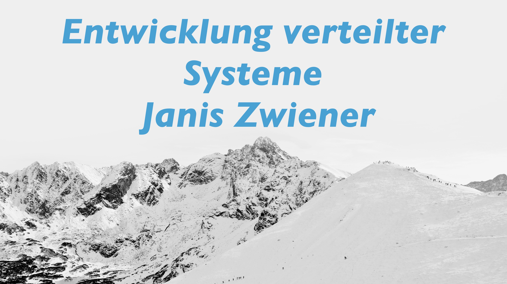

Verteilte Systeme
Janis Zwiener
Home
Vorlesung 1
Einführung/Bridges & Swichtes
Tiefseekabel
Software Architektur von dynamischen Websites
Java Streams
Vorlesung 2
Lesen und schreiben von Textdateien
Java.io.File & Reader/Writer
Netzwerke - Server/Client
Vorlesung 3
Einführung
Threads
ChatServer
Vorlesung 4
Thread Scheduler
Nebenläufigkeitsprobleme
Verlorene Aktualisierung
Erzeuger/Verbraucher-Problem:
Vorlesung 5
Tomcat Server
Tomcat Development & Deployment
Potenzielle Probleme
Vorlesung 6
Apps!!!
PWA
React
JavaScript
Asynchrone Programmierung
Promises
Schwerpunkt-Thema
Warum Webapps?
Progressives Deployment
Beispiel
Conclusion
Reflexion
